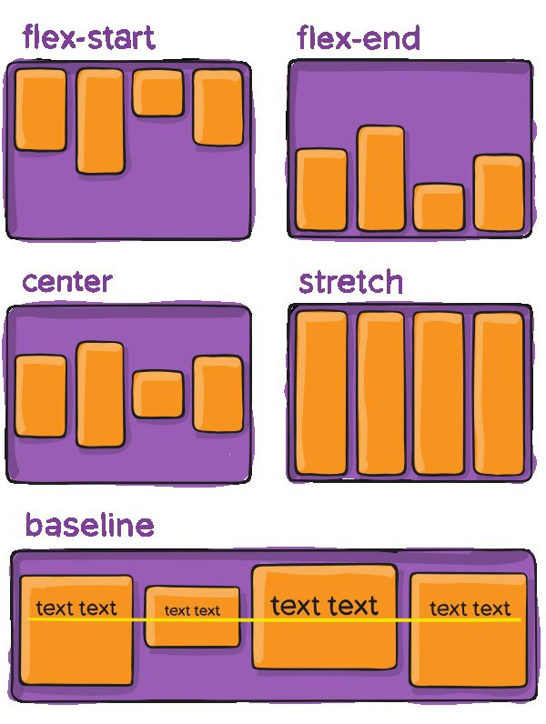

Proposito
El proposito de este sitio para dar solucion a la problematica presentada en la cual se debe realizar el diseño y creacion de una aplicacion, con el fin de dinamizar el aprendizaje con el tema seleccionado La interfaz de usuario,
Interacción Humano Ordenador
Flex Box
Flexbox es un sistema de elementos flexibles que llega con la idea de olvidar estos mecanismos y acostumbrarnos a una mecánica más potente, limpia y personalizable, en la que los elementos HTML se adaptan y colocan automáticamente y es más fácil personalizar los diseños. Está especialmente diseñado para crear, mediante CSS, estructuras de una sóla dimensión.

Imagen de Referencia Tomada del sitio web - Academia Hack
CSS Grid
CSS Grid contiene funciones de diseño dirigidas a los desarrolladores de aplicaciones web. El CSS grid se puede utilizar para lograr muchos diseños diferentes. También se destaca por permitir dividir una página en áreas o regiones principales, por definir la relación en términos de tamaño, posición y capas entre partes de un control construido a partir de primitivas HTML

Imagen de Referencia Tomada del sitio web - morioh